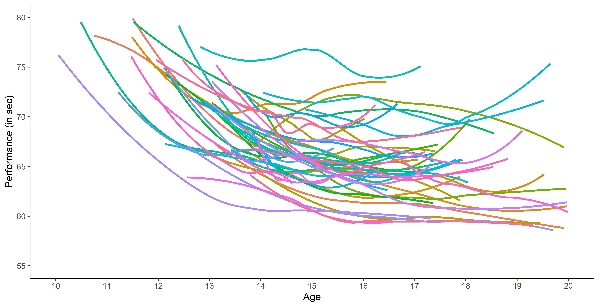
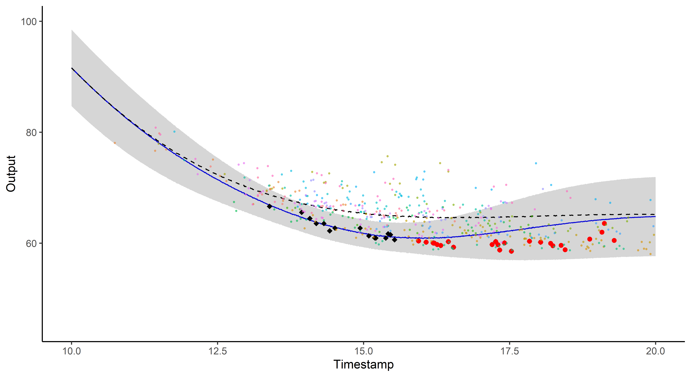
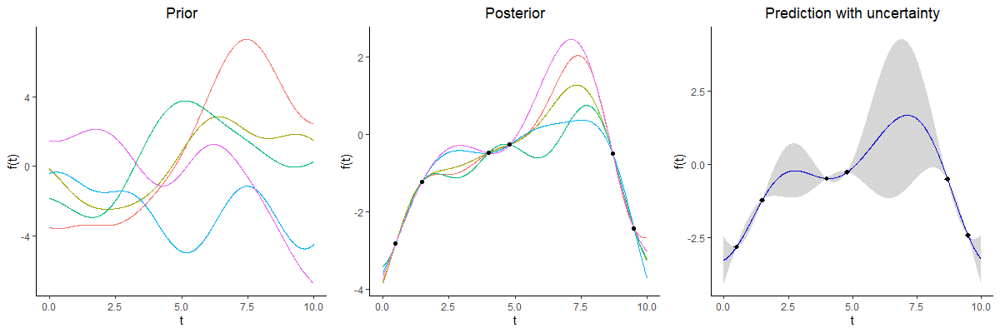
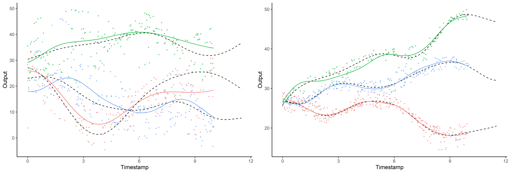

IA et sport :
Prédiction de la performance future en natation
Arthur Leroy
MAP5, Université de Paris
Maths et Sport - Mathématiques en mouvement - 19/05/2021
Les origines
Projet de 3 ans (2017-2020) portant sur le développement de méthodes d’apprentissage automatique pour le sport de haut-niveau.
Une problématique:
-
Plusieurs études scientifiques récentes remarquent que les meilleurs jeunes sportifs atteignent rarement (\(\approx 10\%\)) le haut niveau,
-
Les experts du monde sportif (fédérations, entraineurs, …) demandent de nouveaux indicateurs objectifs pour aider la détection des jeunes à fort potentiel.
Une opportunité :
-
La Fédération Française de Natation (FFN) propose une base de données contenant des millions de résultats issus des compétitions disputées en France depuis 2002.
Les données étudiées
Performances de membres de la FFN, au cours de leur carrière, sur 100m nage libre :

Les données étudiées
Performances de membres de la FFN, au cours de leur carrière, sur 100m nage libre :

-
Données temporelles irrégulières (nombre de points et temps d’observations différents),
-
Beaucoup de nageurs pour chaque épreuve,
Les données étudiées
Performances de membres de la FFN, au cours de leur carrière, sur 100m nage libre :

-
Données temporelles irrégulières (nombre de points et temps d’observations différents),
-
Beaucoup de nageurs pour chaque épreuve,
-
Peu d’observations pour chaque nageur.
Un problème, trois questions #1
Existe-t-il des profils de progressions spécifiques parmi les nageurs?

Travailler avec des fonctions et faire des groupes
Pour pouvoir comparer les individus il est nécessaire de définir une représentation commune, et de reconstruire des données fonctionnelles à partir des points d’observations.
L’utilisation d’algorithmes de clustering de courbes permet d’identifier différents profils de progression, correspondant bien à ce qui est observé par les experts de la natation en pratique.

Une question bonus
Mais au fait, comment fait on pour apprendre ?

Quelques clarifications sur les termes à la mode

Le travail présenté ici se concentre sur deux grands problèmes de machine learning :
-
L’apprentissage supervisé, où l’on cherche à généraliser à partir de données du type entrée-sortie pour faire des prédictions.
-
L’apprentissage non-supervisé (ou clustering), où l’on cherche les structures de groupe dans des données de même type.
Apprentissage supervisé, les grands principes
\[y = \color{green}{f}(x) + \epsilon\]
où :
-
\(x\) est la donnée d’entrée (ici l’âge du nageur),
-
\(y\) est la donnée de sortie (ici la performance sur 100m),
-
\(\epsilon\) est le bruit, un terme d’erreur aléatoire,
-
\(\color{green}{f}\) est une fonction inconnue qui définie la relation entre les données d’entrée et de sortie.
Tout le problème de l’apprentissage supervisé consiste à trouver la bonne fonction \(\color{green}{f}\), en s’aidant de données observées \(\{(x_1, y_1), \dots, (x_n, y_n) \}\), pour pouvoir effectuer des prédictions lorsque l’on observe une nouvelle donnée \(x_{n+1}\).
Apprentissage supervisé 1.0, le regréssion linéaire
L’exemple le plus simple est celui de la régression linéaire, où l’on fait l’hypothèse que :
\[\color{green}{f}(x) = a x + b\]
Trouver la meilleure fonction \(\color{green}{f}\) revient à estimer la bonne valeur de \(a\) et \(b\) pour nos données.

Apprendre une fonction grâce à Bayes ?
Bien que la formule de Bayes soit connue depuis longtemps, il est général très difficile de calculer certains termes.
Cependant, les récents développements de l’informatique et les grandes puissances de calcul ont permis de le développement de la statistique Bayésienne, qui au coeur de nombreux algorithmes d’apprentissage.
Cette approche permet de raisonner en terme de probabilités, et de quantifier l’incertitude de nos prédictions.
En particulier, un algorithme très populaire pour apprendre notre fonction d’apprentissage \(\color{green}{f}\) et effectuer des prédictions probabilistes repose sur l’utilisation des processus gaussiens.
Un problème, trois questions #2
Est-il possible de prédire des performances futures (et quantifier nos certitudes) ?

Processus gaussien, ou le miracle de l’apprentissage probabiliste
Pas de restrictions sur \(\color{green}{f}\) mais des probabilités a priori parmi toutes les fonctions possibles.

Prédiction à l’aide d’un processus gaussien

Les processus gaussiens offrent un cadre de modélisation idéal mais restent insuffisants pour faire des prédictions (surtout à long terme).
Parfois le problème concret inspire l’innovation mathématique


Un problème, trois questions #3
Est ce que former des groupes d’individus permet d’améliorer les prédictions?

Prédiction et regroupement simultanés


Et finalement pour nos nageurs ?

Si vous avez des questions…
 … c’est le moment de se jeter à l’eau
… c’est le moment de se jeter à l’eau